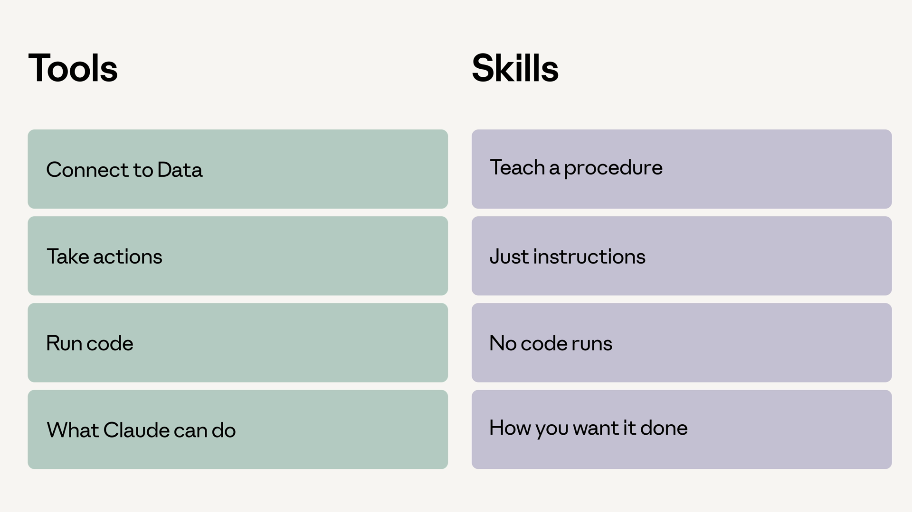
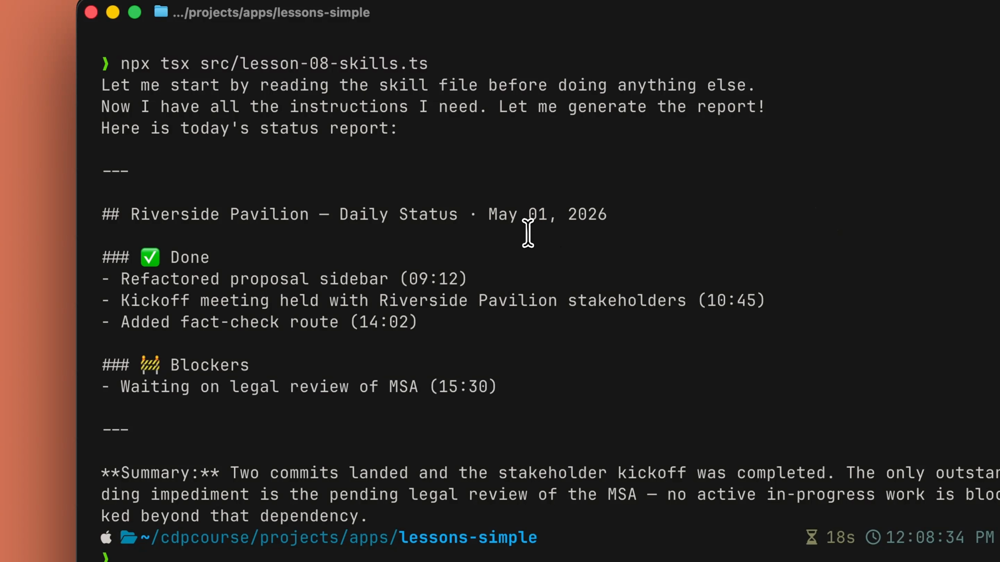
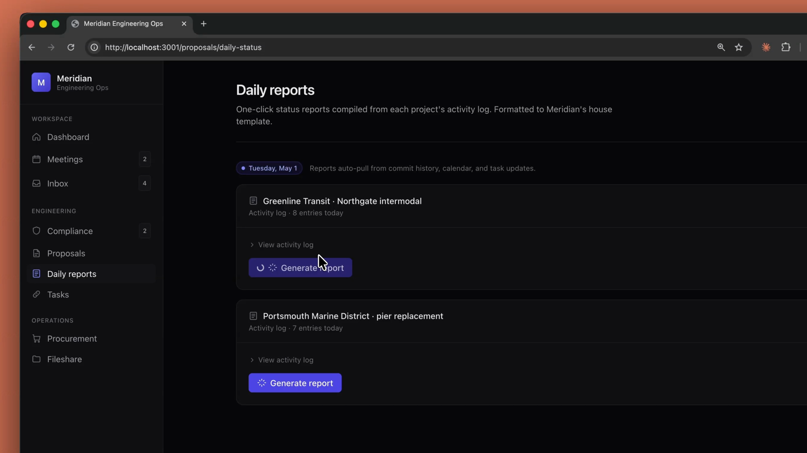

Skills
Чему научитесь
Видео 2:53 и текст урока
К концу урока вы сможете:
- отличать skills от инструментов: инструменты — о том, что Claude может сделать, skills — о том, как вы хотите, чтобы это было сделано;
- объяснить, как skill попадает в контекст постепенно: сначала только имя и описание, целиком — когда агент решит его использовать;
- загрузить skill через
client.skills.createи подключить его к вызовуmessages.createчерезcontainer.skills; - объяснить, зачем вместе со skills в запрос добавляют инструмент code execution.
Видео и текст урока.
Skills — это папки с инструкциями, скриптами и ресурсами, которые Claude подгружает по мере надобности, чтобы лучше справляться со специализированными задачами. В основе каждого skill лежит файл SKILL.md — упакованный набор инструкций, который вы загружаете один раз, а затем подключаете к любому вызову messages.create. Вы учите Claude тому, как что-то делаете именно вы: в каком формате пишете отчёт о статусе, по какому чеклисту проводите ревью, как оформляете заметки к релизу. Claude читает skill, следует процедуре и выдаёт результат в нужной вам форме.
Skills и инструменты
Разницу стоит понимать чётко, потому что они решают разные задачи:
- Инструменты связывают Claude с данными и действиями. «Найди этот пункт строительных норм», «отправь это письмо» — Claude вызывает инструмент, а работу выполняет что-то другое.
- Skills учат Claude процедуре. «Составь ежедневный отчёт о статусе по этому шаблону» — это готовый сценарий действий, который Claude читает и выполняет; иногда для этого он сам запускает приложенные к skill скрипты.
Запомнить просто: инструменты — о том, что Claude может сделать, а skills — о том, как вы хотите, чтобы это было сделано.

И ещё одна важная деталь: при запуске skills не загружаются в контекст целиком. Сначала загружаются только имя и описание. Когда агент решает, что skill подходит для задачи, он загружает в контекст весь skill. Так контекст остаётся компактным, даже если доступно много skills.
Загрузка skill
Skill загружают в ваш workspace один раз, а потом ссылаются на него по ID. Загрузить его можно прямо в Claude Platform или программно:
import anthropic
from anthropic.lib import files_from_dir
client = anthropic.Anthropic()
skill = client.skills.create(
display_name="Status Report Generator",
files=files_from_dir("status-report-skill"), # folder containing SKILL.md
)
print(skill.id) # reference this ID in future requests
В этом примере мне нужен генератор отчётов о статусе. Все правила хорошего отчёта — разделы, тон, как подводить итог, как описывать блокеры — лежат в skill, упакованном заранее. А сам журнал активности — просто строка, которую передают в момент запроса.
Как подключить skill к запросу
Skills подключаются к запросу через настройки контейнера: внутри него есть массив skills, и в каждом элементе указаны skill_id и version. Вот полный вызов для генератора отчётов о статусе:
response = client.messages.create(
model="claude-opus-5",
max_tokens=4096,
container={
"skills": [
{
"type": "custom",
"skill_id": skill.id,
"version": "latest",
}
]
},
tools=[
{
"type": "code_execution_20250825",
"name": "code_execution",
}
],
messages=[
{
"role": "user",
"content": f"Generate the daily status report from this activity log:\n\n{activity_log}",
}
],
)
На что стоит обратить внимание:
- Мы вызываем обычный
client.messages.create, без бета-заголовка. Skills общедоступны (generally available) в Claude API, поэтому бета-заголовокskills-2025-10-02больше не нужен; запросы, которые всё ещё его отправляют, работают как прежде. - Skill подключается в
container.skills. Это список, поэтому к одному вызову можно подключить сразу несколько skills. - Здесь же включён и инструмент выполнения кода (code execution). Без него нельзя: в API skills работают внутри контейнера инструмента code execution, и именно это позволяет процедурам из skill делать реальную работу — например, запускать скрипты в терминале.
Запуск
На выходе — отчёт о статусе, оформленный ровно так, как велит skill. Разделы, тон, описание блокеров — всё это берётся из загруженного вами файла SKILL.md. Промпт пользователя занимает одну строку, а процедура живёт в skill.

В рабочем приложении так команда добивается того, что целая функция продукта выдаёт единообразный результат. С таким эндпоинтом для ежедневных отчётов каждый менеджер проекта получает одну и ту же структуру, тот же тон, те же разделы в том же порядке — и никому не приходится копировать шаблон в промпт.

Итог
- Skills упаковывают ваши процедуры. Файл
SKILL.md(плюс скрипты и ресурсы, если они есть) учит Claude, как вы хотите, чтобы что-то было сделано. - Инструменты и skills: инструменты — о том, что Claude может сделать; skills — о том, как вы хотите, чтобы это было сделано.
- Skills загружаются постепенно. При запуске загружаются только имя и описание; весь skill попадает в контекст, когда агент решает его использовать.
- Загрузите один раз через
client.skills.create, а затем подключайте черезcontainer.skillsк любому вызовуmessages.create— это список, так что skills можно комбинировать. - Добавьте code execution, когда процедуре из skill нужно делать реальную работу.
- Берите skill, когда как важно не меньше, чем что.
Дальше
Следующий урок — «MCP»: если у нас уже есть инструменты, skills и коннекторы, зачем нужен ещё и MCP? Ответ сводится к тому, кто поддерживает код интеграций.
Оригинал урока: Skills.